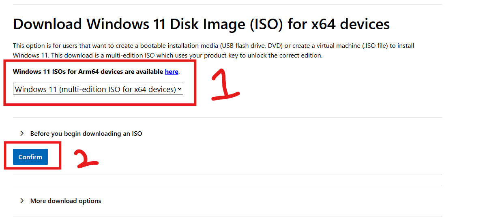
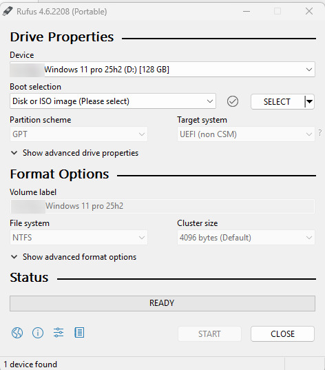
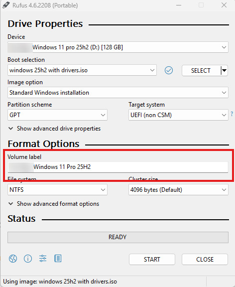
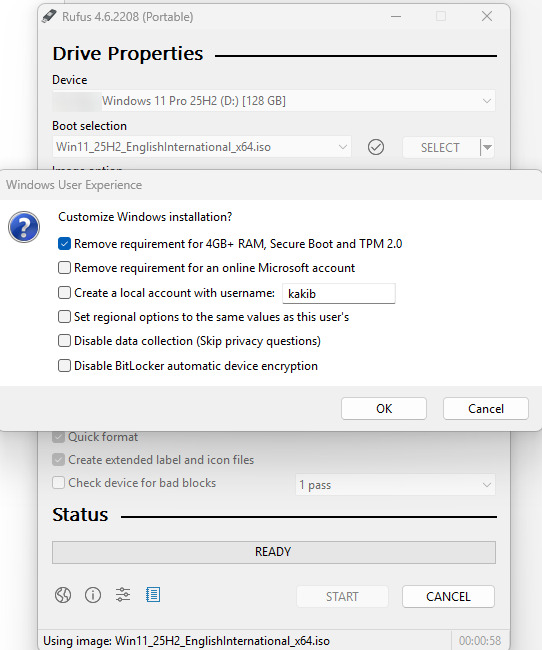
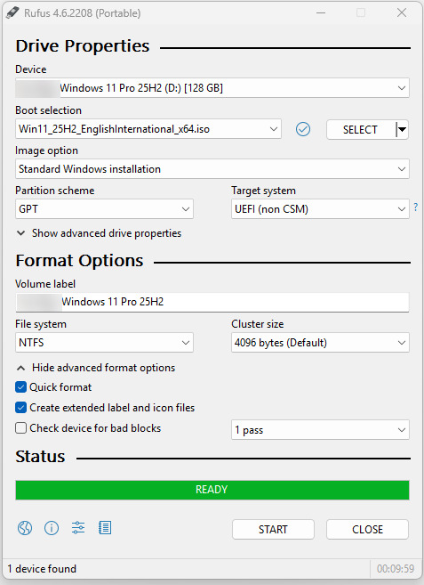

When a laptop needs a truly clean start (a new starter, a re-assigned device or a machine that is beyond repair), I reimage it from a USB stick so it lands on the Windows out-of-box experience (OOBE). From there the user signs in with their work account and the device enrols itself in Intune.
What you need
- A USB stick of 32 GB or more. Everything on it will be erased.
- A Windows PC to build the stick on.
Steps
- Download the Windows 11 disk image (ISO) from Microsoft: microsoft.com/software-download/windows11. Choose the multi-edition ISO for x64 devices and click Confirm.

The multi-edition ISO on Microsoft's download page - Download Rufus from the official site: rufus.ie. The portable version is fine.
- Insert the USB stick and open Rufus. It should look like this:

Rufus with the USB stick detected - Click Select next to Boot selection and pick the Windows ISO you downloaded in step 1.
- Give the stick a clear Volume label (for example
Windows 11 Pro 25H2) so it is easy to recognise in a boot menu.
ISO selected and volume label set - Click Start. Rufus asks how to customise the installation. Use these settings exactly. Leave the local-account and privacy options unticked, so the device still goes through the normal OOBE and work-account sign-in.

Customisation options: leave the local account option unticked - Click OK and wait for the status bar to turn green and show READY. Done!

Finished: the stick is ready to use
Next step: use the stick to reimage a laptop and enrol it into Intune.